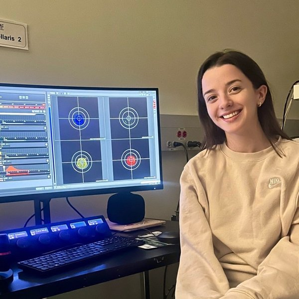

Allan Slaight Scientist, Princess Margaret Cancer Centre
Assistant Professor, Department of Medical Biophysics, University of Toronto
Stephanie received her B.A. in biology at the University of Chicago and her Ph.D. at the Massachusetts Institute of Technology. She went on to postdoctoral fellowships at the Massachusetts General Hospital with Dr. David Scadden and at Princess Margaret Cancer Centre with Dr. John Dick.
She is an Allan Slaight Scientist at the Princess Margaret Cancer Centre in the University Health Network and Assistant Professor in the Department of Medical Biophysics at the University of Toronto. She has been recognized for her work by the American Association for Cancer Research as a 2025 NextGen Star.
When not in the lab, she enjoys cooking for her family and nurturing her orchids and many other plants.
Lab Manager & Senior Research Technician
Jessica is the Lab Manager and Senior Research Technician in the Xie Lab, bringing over 15 years of experience in hematopoietic stem cell and leukemia research. She oversees day-to-day lab operations and supports the team’s research, training, and experimental activities. Outside the lab, Jessica enjoys music and going to concerts.

[Role / project]
[Role / project]
[Role / project]
[Role / project]
[Role / project]